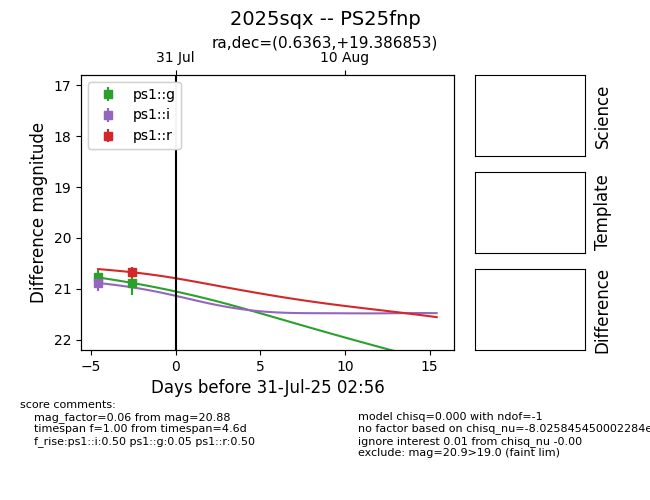

Target 2025sqx at 2025-08-06 22:53, see:
TNS: wis-tns.org/object/2025sqx
YSE: ziggy.ucolick.org/yse/transient_detail/2025sqx
alt names
2025sqx (yse,tns)
PS25fnp (panstarrs)
coordinates:
equatorial (ra, dec) = (0.6363,+19.38685)
galactic (l, b) = (107.3424,-42.00007)
photometry
last ps1::g=20.88, ps1::i=20.89, ps1::r=20.67
2 ps1::g, 1 ps1::i, 1 ps1::r detections
